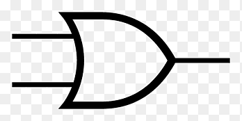
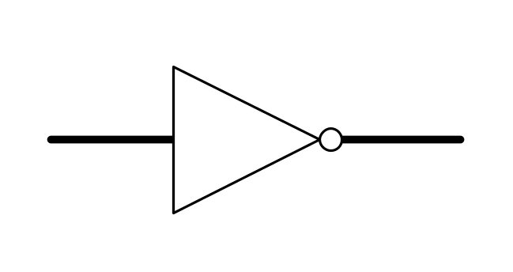
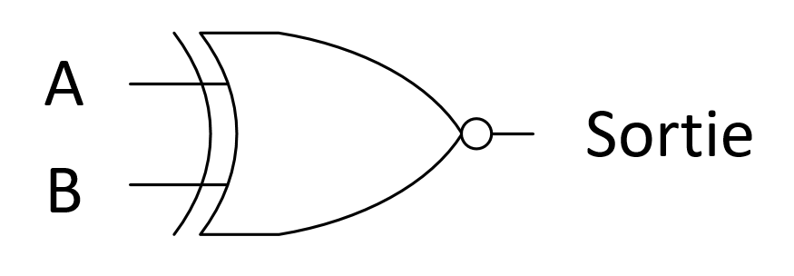
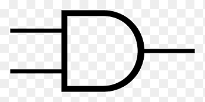

Architecture des Ordinateurs
Conversion entre bases
Les ordinateurs travaillent en base binaire. Mais nous utilisons la base décimale et parfois l'hexadécimale pour simplifier l'affichage.
- Décimal → Binaire : divisions successives par 2
- Binaire → Décimal : somme des puissances de 2
- Décimal → Hexa : divisions par 16
- Binaire ↔ Hexa : chaque groupe de 4 bits = 1 chiffre hexa
Exemples :
13 (décimal) = 1101 (binaire)
1011 (binaire) = 8 + 0 + 2 + 1 = 11 (décimal)
1111 1111 (binaire) = FF (hexa)
Portes logiques et tables de vérité
Les circuits logiques combinatoires sont faits de portes AND, OR, NOT, XOR. Leur comportement est défini par des tables de vérité.
Exemple : A AND B
A | B | A AND B
--|---|--------
0 | 0 | 0
0 | 1 | 0
1 | 0 | 0
1 | 1 | 1
Ces tables permettent de concevoir des circuits logiques pour des opérations simples (additionneur, comparateur, etc).
Porte AND
La porte AND est une porte logique qui ne renvoie 1 que si les deux entrées sont à 1.
Elle est souvent utilisée pour réaliser des opérations de sélection ou de contrôle dans les circuits numériques.
On concidère le circuit suivant :

Sa table de vérité :
A | B | A AND B
--|---|--------
0 | 0 | 0
0 | 1 | 0
1 | 0 | 0
1 | 1 | 1
La porte AND est utilisée dans de nombreux circuits logiques, notamment pour réaliser des additionneurs et des circuits de contrôle.
Porte OR
La porte OR est une porte logique qui renvoie 1 si au moins une des entrées est à 1.
On considere le circuit suivant :
Table de vérité :
A | B | A OR B
--|---|--------
0 | 0 | 0
0 | 1 | 1
1 | 0 | 1
1 | 1 | 1
La porte OR est souvent utilisée pour réaliser des circuits de sélection et de contrôle.
Porte NOT
La porte NOT est une porte logique qui inverse l'état de son entrée.
On considère le circuit suivant :
Table de vérité :
A | NOT A
--|-------
0 | 1
1 | 0
La porte NOT est souvent utilisée pour réaliser des circuits de contrôle et d'inversion.
Porte XOR
La porte XOR (ou "exclusive OR") est une porte logique qui renvoie 1 si une seule des entrées est à 1.
On considère le circuit suivant :
Sa table de vérité :
A | B | A XOR B
--|---|--------
0 | 0 | 0
0 | 1 | 1
1 | 0 | 1
1 | 1 | 0
La porte XOR est souvent utilisée pour réaliser des circuits de contrôle et de sélection.
Additionneur binaire
Un additionneur binaire est un circuit qui additionne deux nombres binaires. Il utilise des portes logiques pour réaliser l'opération.
On considere le circuit suivant :
Sa table de verite :
A | B | S (Somme) | C (Retenue)
--|---|-----------|---------
0 | 0 | 0 | 0
0 | 1 | 1 | 0
1 | 0 | 1 | 0
1 | 1 | 0 | 1
L'additionneur binaire peut être étendu pour additionner des nombres de plusieurs bits en utilisant des circuits appelés "additionneurs en cascade".
Multiplexeur
Un multiplexeur est un circuit qui sélectionne une entrée parmi plusieurs en fonction d'un signal de contrôle.
Exemple :
Sélectionneur | Entrée 0 | Entrée 1 | Sortie
--------------|-----------|-----------|-------
0 | 0 | 1 | 0
1 | 1 | 0 | 1
Le multiplexeur est souvent utilisé pour réaliser des circuits de sélection et de contrôle.
Démultiplexeur
Un démultiplexeur est un circuit qui distribue une entrée à plusieurs sorties en fonction d'un signal de contrôle.
Exemple :
Sélectionneur | Entrée | Sortie 0 | Sortie 1
--------------|--------|-----------|---------
0 | 1 | 1 | 0
1 | 0 | 0 | 1
Le démultiplexeur est souvent utilisé pour réaliser des circuits de distribution et de contrôle.
Additionneur complet
Un additionneur complet est un circuit qui additionne deux bits et une retenue d'entrée pour produire une somme et une retenue de sortie.
Exemple :
A | B | Cin | S (Somme) | Cout (Retenue)
--|---|-----|-----------|---------
0 | 0 | 0 | 0 | 0
0 | 0 | 1 | 1 | 0
0 | 1 | 0 | 1 | 0
0 | 1 | 1 | 0 | 1
1 | 0 | 0 | 1 | 0
1 | 0 | 1 | 0 | 1
1 | 1 | 0 | 0 | 1
1 | 1 | 1 | 1 | 1
L'additionneur complet est souvent utilisé pour réaliser des circuits d'addition de plusieurs bits.
Comparateur
Un comparateur est un circuit qui compare deux nombres binaires et produit une sortie indiquant leur relation (égal, supérieur, inférieur).
Exemple :
A | B | A = B | A > B | A < B
--|---|-------|-------|-------
0 | 0 | 1 | 0 | 0
0 | 1 | 0 | 0 | 1
1 | 0 | 0 | 1 | 0
1 | 1 | 1 | 0 | 0
Le comparateur est souvent utilisé pour réaliser des circuits de contrôle et de sélection.
Forme disjonctive
La forme disjonctive est une représentation d'une fonction logique sous forme de somme de produits. Elle est utilisée pour simplifier les circuits logiques.
Exemple :
F(A, B, C) = A'B'C + AB'C' + ABC
Cette expression correspond à la table suivante :
A | B | C | F(A, B, C)
--|---|---|---------
0 | 0 | 0 | 1
0 | 0 | 1 | 0
0 | 1 | 0 | 1
0 | 1 | 1 | 0
1 | 0 | 0 | 1
1 | 0 | 1 | 0
1 | 1 | 0 | 1
1 | 1 | 1 | 0
La forme disjonctive est souvent utilisée pour réaliser des circuits logiques combinatoires.
On commence toujours par dresser la table de vérité avant de faire le circuit!
Circuits séquentiels
Contrairement aux circuits combinatoires, les circuits séquentiels prennent en compte les états précédents. Ils sont à la base des mémoires, registres, compteurs, etc.
- Bascules : RS, D, JK, T
- Registres : ensemble de bascules stockant des bits
- Compteur binaire : circuit qui incrémente un état binaire à chaque cycle
Les circuits séquentiels sont pilotés par un signal d'horloge qui déclenche les changements d'état.
LC-3 : processeur simplifié
Le LC-3 est un modèle de processeur simple pour comprendre comment fonctionne une machine. Il utilise un assembleur simplifié et quelques registres.
- Registres : R0 à R7
- Instructions : ADD, AND, NOT, LD, BR, HALT, etc.
- Adresses mémoire codées sur 16 bits
Exemple :
; Ajouter 5 et 3
LD R1, val1
LD R2, val2
ADD R0, R1, R2
HALT
val1 .FILL #5
val2 .FILL #3
Ce code charge les valeurs 5 et 3 dans des registres, les additionne et stocke le résultat dans R0.